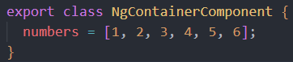
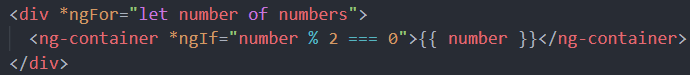

ng-container allows us to create a section in
the template without introducing a new HTML element
-
You might think, "why not just render number inside the div tag
using interpolation, we still wouldn't be introducing a new HTML element
-
You would be unable to conditionally render content, since HTML tags
can only hold ONE structrual directive
- You could still render each number using a span or p tag
-
Apart from not introducing a new HTML tag to the DOM, this is handy in
case you have a global style applied to the tag you'd like to use, that
you do not want applied to these elements

